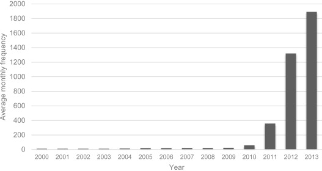
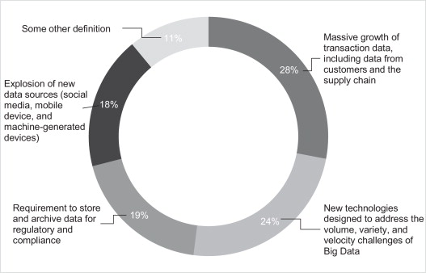
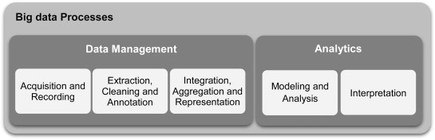
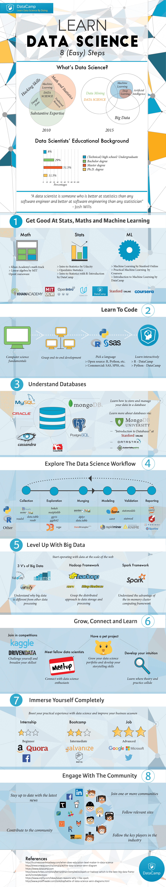
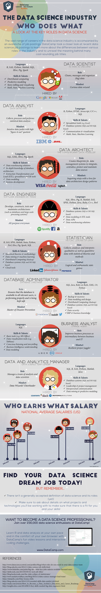
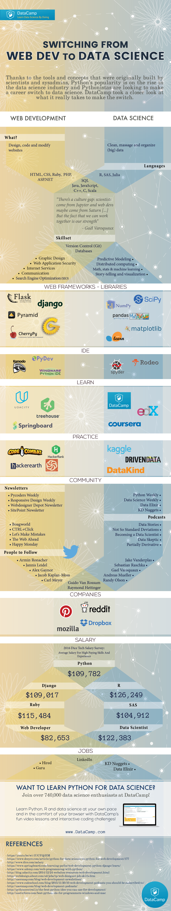
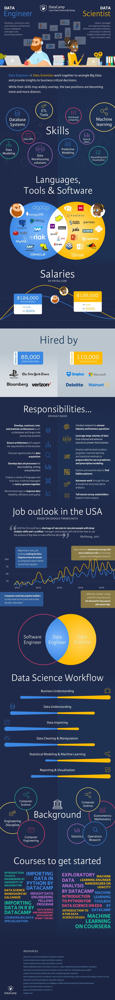
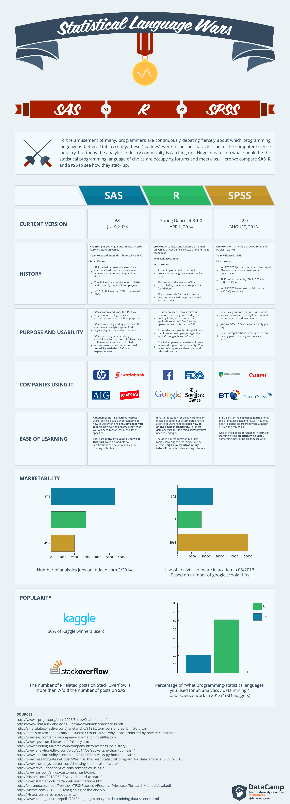

Foreword
Notes. An image is worth…
Big – Data – Science
The rise

What?

Process

Data Science
Knowledge base


Learning

Talent Big Picture


Data Scientist
Hybrid role…

Cross Over to Data Science


Programming Languages

Data Software
